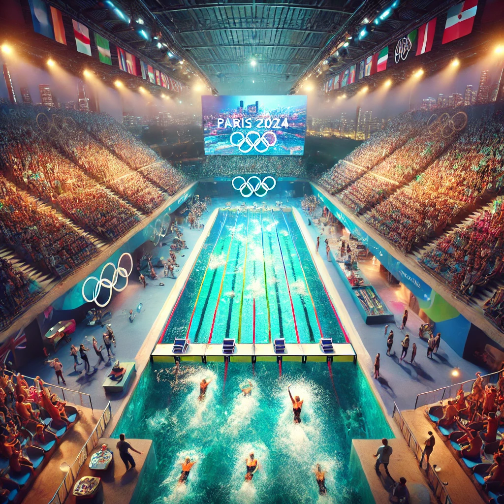
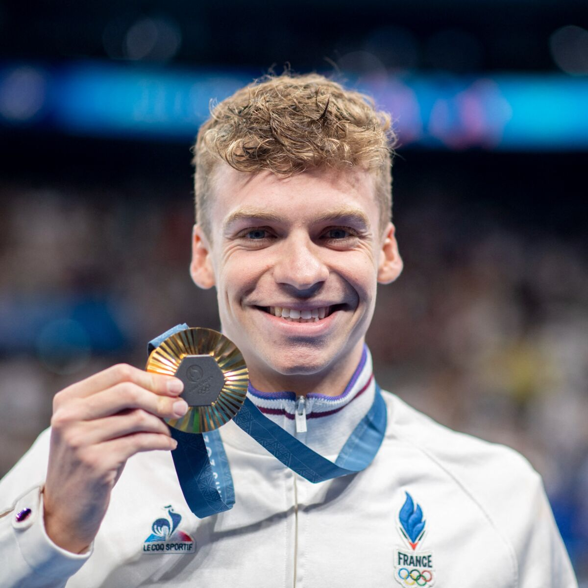

Natation
La natation est un événement incontournable des Jeux Olympiques. Avec ses différents styles (nage libre, dos, brasse, papillon) et distances, elle offre aux spectateurs des performances spectaculaires et souvent historiques.
Paris La Défense Arena - JO 2024
Située à Nanterre, cette arène moderne accueille les épreuves de natation. Avec une capacité de plus de 15 000 spectateurs, elle offre un cadre spectaculaire et immersif pour des performances de haut niveau.
Les Règles de Base de la Natation
1. Les Styles de Nage
- Crawl : Technique la plus rapide.
- Dos crawlé : Nage sur le dos.
- Brasse : Mouvement symétrique des bras et jambes.
- Papillon : Mouvement ondulatoire avec battement de dauphin.
2. Départs
- Nage libre, brasse, papillon : Depuis le plot de départ.
- Dos : Depuis l’eau.
Léon Marchand : Un Talent d’Exception
Né en 2002, Léon Marchand est un nageur polyvalent qui écrit l'histoire de la natation française. Avec de multiples médailles aux championnats mondiaux, il est une figure de proue des Jeux Olympiques 2024.
Palmarès de Léon Marchand
- Médailles d’or : 200 m et 400 m 4 nages aux Championnats du Monde 2022.
- Champion d’Europe 2022 (200 m 4 nages).
- Médaillé d’argent aux Jeux Olympiques de Tokyo 2021 (400 m 4 nages).